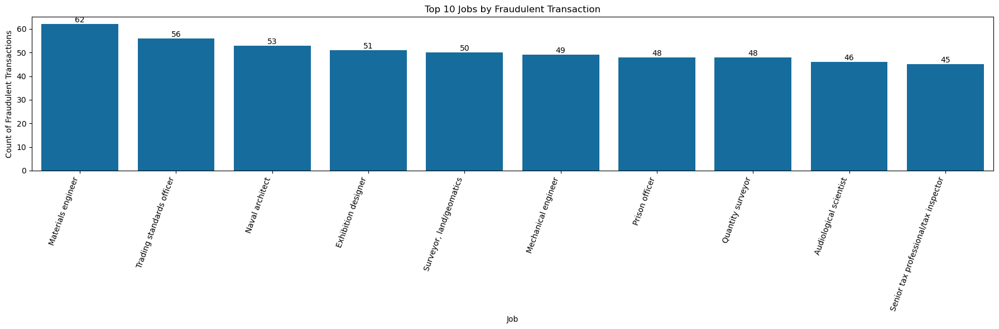

📊 Fraud Detection Data Analysis
Fraud Detection EDA Dashboard
📦 Data Resource
Original dataset from
Kaggle: Credit Card Fraud Detection
📄 Interactive EDA Report
Access the full exploratory data analysis report here:
📄 View Full EDA Report (HTML)
📈 Data Visualization Display
1️⃣ Fraud Volume per Transaction Category
.png)
🔠Fraudulent activity is most concentrated in “grocery_pos†and “gas_transport†categories.
2️⃣ Top 10 Cities by Fraud Number

🔠The fraud number of these 10 cities are relatively close to each other, among which Birmingham has the highest fraud rate.
3️⃣ Distribution of Fraud Amounts vs Normal Distribution

🔠This chart compares the distribution of transaction amounts for fraudulent transactions (blue histogram) with a fitted normal distribution (red dashed line). It helps assess how well fraud transaction amounts follow a normal distribution and reveals patterns or anomalies such as skewness or irregular peaks.
4️⃣ Top 10 Jobs by Fraud Number

🔠The job distribution bar chart shows that film/video editors have the highest number of fraudulent transactions
5️⃣Fraud vs Non-Fraud by Age Interval
.png)
🔍Age‐interval comparison indicates fraud frequency increases with age, peaking in the 58–95 age group.
📦 Data Cleaning
- Removed redundant variables and retained only
category, amt, gender, job, is_fraud, and age_at_transaction for testing.
-
Categorical Variables encoding
- Considering that
category has a relatively small number of subdivisions, I encoded it by mapping each sub-category to a specific integer.
- For
job, I initially considered using LabelEncoder, but its integer encoding implies an ordinal relationship among categories, which is not appropriate for this feature. Therefore, I applied frequency encoding instead.
-
Numerical Variables encoding
- Scaled
amt and age_at_transaction using StandardScaler.
🤖 Model Building & Testing
1️⃣ Logistic Regression
- Used all remaining variables to train the model, but the classification report performance was unsatisfactory.

- Assessed feature importance by examining the magnitudes of the model’s coefficients.
- Tried optimizing the model by combining Precision–Recall curve threshold selection with over- and under-sampling.

Confidence Interval of Coefficients
Baseline Fraud Risk (~1.8 %)
This is the model’s “starting point” probability of fraud when all input factors
(amount, category, gender, job frequency, age) are at their reference level
(i.e. zero on your scaled/encoded scale). Converting the intercept (–3.99) into a
probability gives about 1.8 %, meaning that without any other information,
the model would guess just under a 2 % chance of fraud.
Confidence Intervals (CIs)
A 95 % confidence interval is a range around each coefficient that shows how precise
that estimate is. If the range doesn’t cross zero, we’re reasonably sure (95 % confident)
that the real effect isn’t just random noise. In my results, all intervals stayed
either entirely above or entirely below zero, so each factor has a real impact on fraud risk.
Key Feature Effects
-
Transaction Amount (amt):
Higher amounts increase fraud risk. Every one-unit jump in your scaled amount
raises the odds of fraud by about 58 %.
-
Merchant Category (category_Code):
Some categories are slightly safer. Moving up one code reduces fraud odds by
about 15 %.
-
Gender (gender_le):
Depending on how you coded it, going from 0→1 increases fraud odds by roughly
23 %.
-
Job Frequency (job_freq):
This feature nearly guarantees non-fraud in your data—higher values push fraud
probability toward zero.
-
Age (age_scaled):
Older customers have a slightly higher fraud risk, with each unit of scaled age
adding about 16 % to the odds.
📊 Key Takeaways
Reading Materials:
ROC Curves & AUC
Precision and Recall
What Is an ROC Curve and AUC?
An ROC curve (receiver operating characteristic curve) measures a classifier’s performance by plotting the true positive rate against the false positive rate at various thresholds. AUC (area under the ROC curve) represents the probability that the classifier will rank a randomly chosen positive instance higher than a randomly chosen negative one.
Why Choose the ROC Curve?
AUC is threshold-invariant (the metric’s value does not depend on a particular decision threshold) and scale-invariant (the metric evaluates ranking quality rather than absolute score values).
Trade-off Between TPR and FPR
If your goal is to identify as many true positives as possible, you pursue a high TPR, which may come at the cost of a higher FPR—meaning false positives become more frequent. And vice versa.
Personal Insights
- TPR indicates the proportion of actual positives that the model correctly predicts as positive. FPR indicates the proportion of actual negatives that the model incorrectly predicts as positive.
- Precision: Of all samples predicted positive (TP + FP), what fraction are truly positive (TP).
- Recall: Of all actual positive samples (TP + FN), what fraction did the model correctly predict as positive (TP).
🔑 Evaluating the Logistic Regression Model: Confusion Matrix, ROC & AUC, and PR Curve
Confusion Matrix

ROC Curve

Key takeaway: An AUC of 0.84 means that in 84% of random fraud–non-fraud pairs, the fraud transaction gets a higher score. This indicates good general discrimination, but it doesn’t tell you how many false alarms you’ll get at a working threshold.
PR Curve

Key takeaway: An Average Precision of 0.19 means that—even though you can rank frauds relatively well—the model’s practical precision is low: when it flags a transaction as fraud, it’s correct only 19% of the time on average.
📠Comment
Although the model achieves strong overall discriminative power (ROC-AUC = 0.84), precision on the minority class remains low (AP = 0.19), so logistic regression is not an effective tool to predict credit card fraud.
2️⃣ Random Forest
- Using the Random Forest with only class_weight='balanced', the model achieved a precision of 0.84 and a recall of 0.69. This configuration prioritized reducing false negatives, only correctly flagging 69% of fraudulent transactions while maintaining a high level of precision.

- Next, I applied both SMOTE (oversampling the minority class at a 0.5 ratio) and random undersampling of the majority class. While this boosted recall to 0.87—meaning the vast majority of fraud cases were detected—it came at the cost of precision dropping to 0.41. In practical terms, many non-fraudulent transactions were now being misclassified as fraud.

- Finally, I tried to remove undersampling and reduce the SMOTE ratio from 0.5 to 0.1. I then used the Precision–Recall curve to identify the optimal decision threshold for maximizing the F1 score. With this tuned setup, the model struck a better balance, yielding a precision of 0.766 and a recall of 0.723.

📊 Evaluating the Random forest Model: ROC & AUC and PR Curve,
PR Curve

Key takeaway: At very low recall , we can get near-perfect precision, but beyond ~0.7 recall precision dips below 0.8. The red dot marks the threshold (≈0.73) that maximizes F₁, giving us about precision ≈ 0.77 and recall ≈ 0.73. Thus, we can strike a balance—catch roughly 73% of frauds while still being right about 77% of the time.
ROC Curve

Key takeaway:The ROC curve shoots almost straight up to a true positive rate (TPR) near 1.0 by the time false positive rate (FPR) is only ~0.1, and the area under curve is 0.99. That indicates nearly perfect rank-ordering of fraud vs. non-fraud by the model.
📊 Feature Importance
🔠Interpretation of Waterfall Plot: In each case, the transaction amount (amt) is the single biggest push (+0.52/ +0.53), followed by the category_Code=2 (+0.45/ +0.46). The age_scaled and job_freq features add only a sliver (+0.01 or less), while gender_le slightly suppresses the score. In short, Random Forest flags these two transactions as fraud almost entirely on the basis of an unusually large amount and a high‐risk category—other features barely move the needle.
📠Comment
Random Forest achieves near‐perfect discriminative power (ROC-AUC = 0.99), its performance on the minority fraud class (precision = 0.766, recall = 0.723) is relatively high enough to detect credit card fraud compared to logistic model.